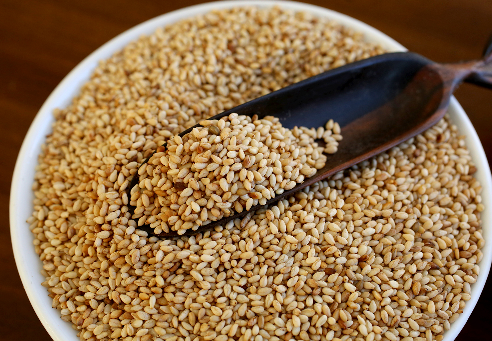
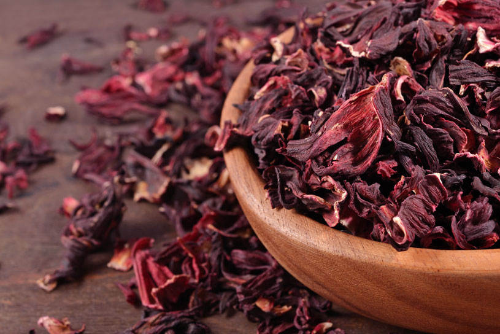
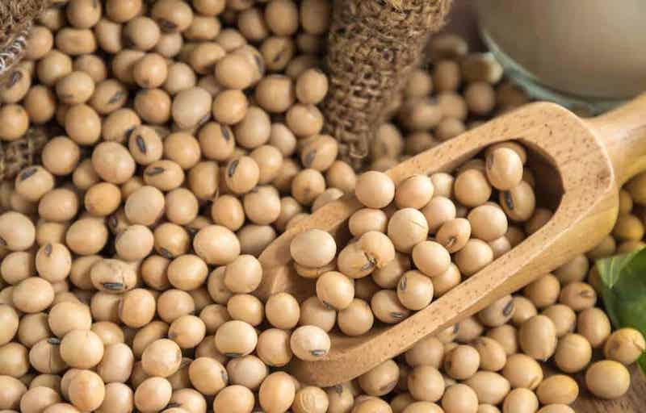
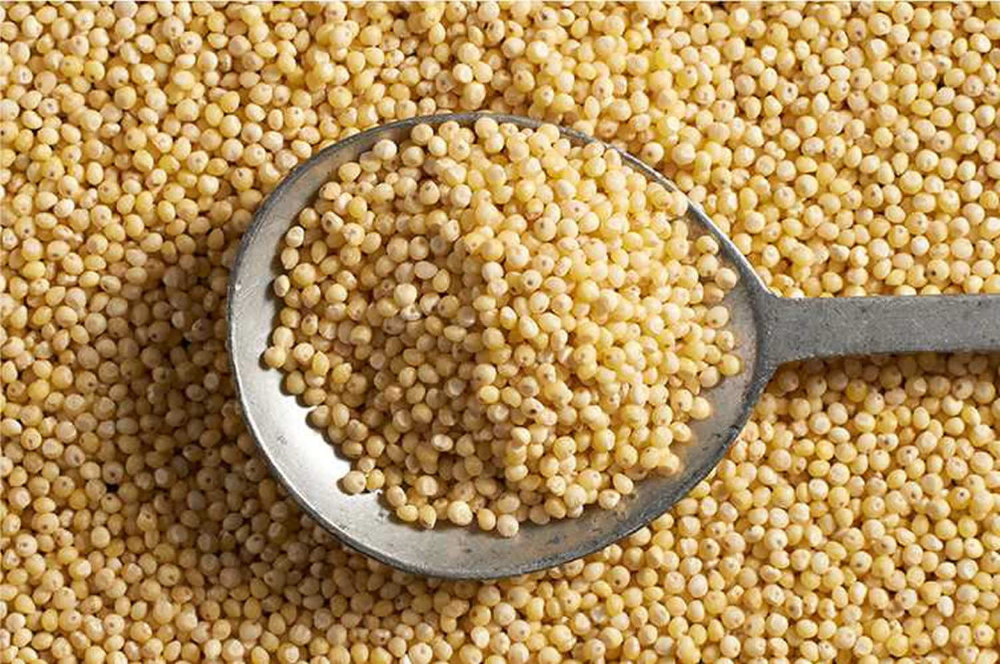
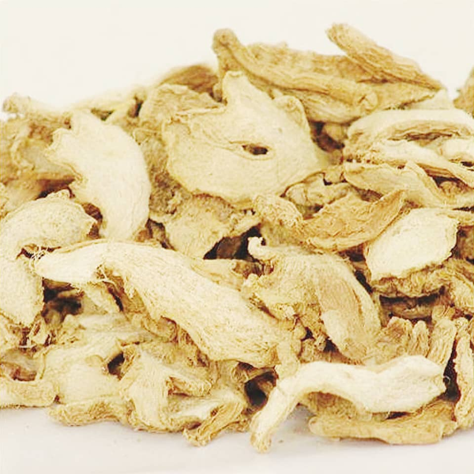
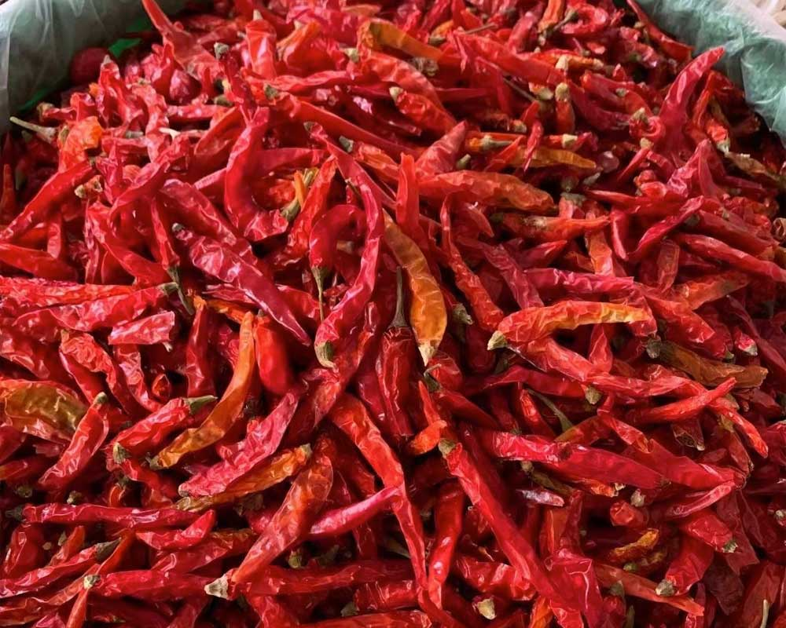
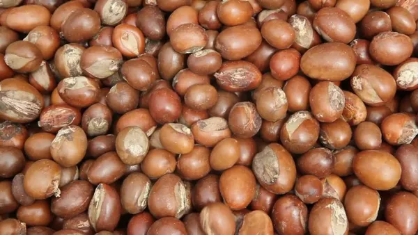
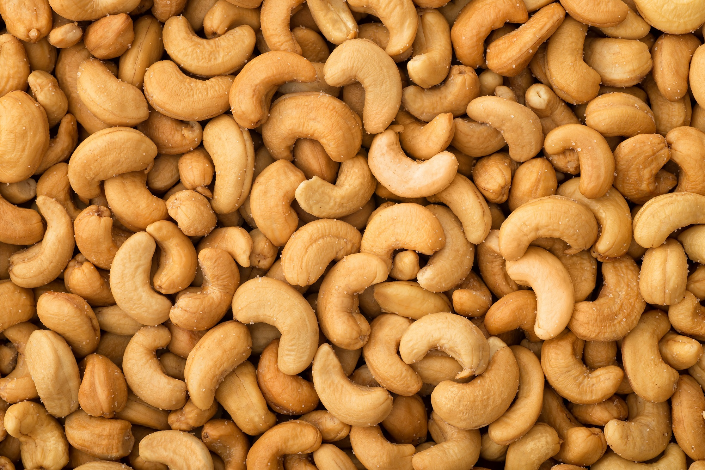

Products
Yuccess Nigeria Ltd exports a variety of premium agricultural commodities, valued worldwide for their nutrition, flavor, and organic qualities.

Sesame Seeds
High oil content, nutty flavor, widely used in global cuisines

Hibiscus Flowers
Deep red, rich in antioxidants, used in teas and natural coloring.

Soya Beans
Protein-rich, used in food, feed, and industrial applications.

Garlic
Bold flavor, high nutritional value, health benefits.

Millet & Sorghum
Gluten-free grains with diverse food and industrial uses.

Dried Slit Ginger
Highly aromatic and widely used in food, medicine, and beverages.

Chili Pepper
Spicy, nutrient-rich peppers in demand worldwide for cooking and food processing.

Sheer Nut
Source of shea butter, valued in food, cosmetics, and pharmaceutical industries.

Cashew Nuts
Premium-quality cashews with excellent taste and health benefits.